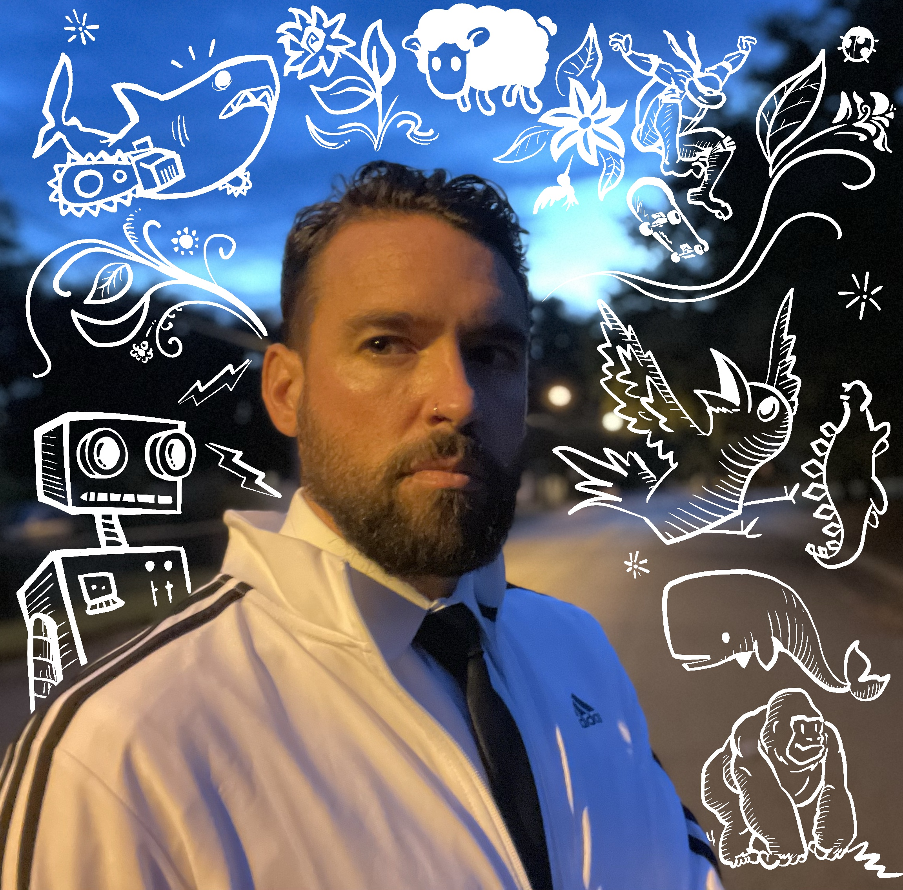
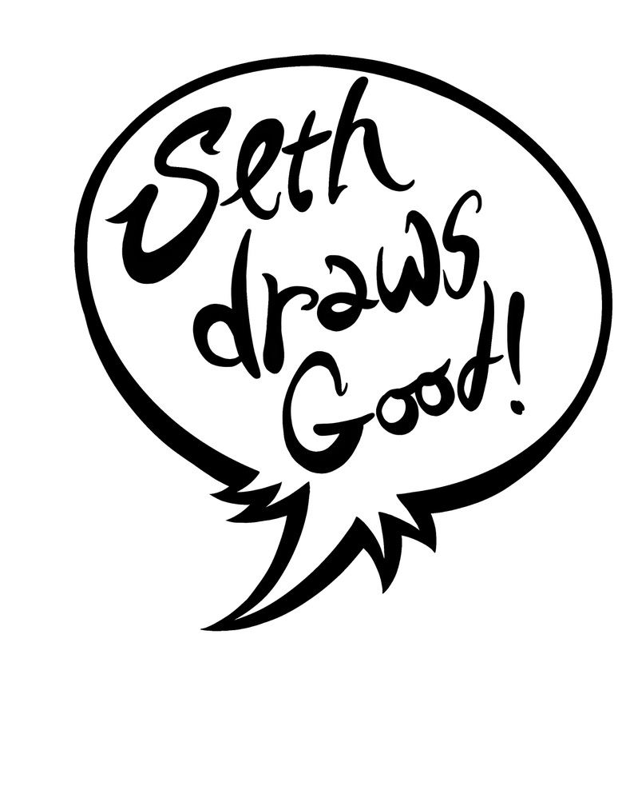
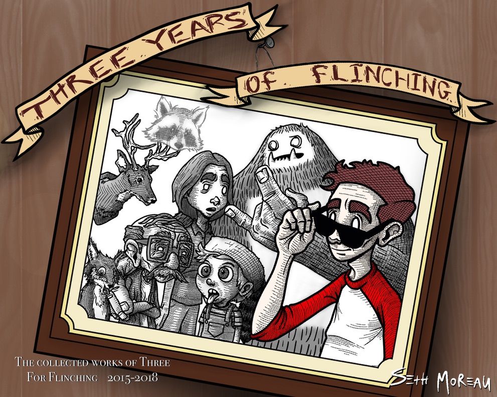

Seth Moreau

SUMMARY
Highly motivated Illustrator with 17+ years of experience in the restaurant industry and a
strong background in cartoon-style art. Skilled in multitasking, problem-solving, and
meeting deadlines in fast-paced environments. Demonstrates exceptional negotiation
skills, leadership capabilities, and clear communication with staff, customers, and
vendors.
PROFESSIONAL EXPERIENCE
Whiteboard Geeks - Recording Artist, Storyboard Artist
2021-Present
- Create and animate storyboards and comic books based on client scripts and recordings.
- Illustrate diverse styles according to client preferences and edit work to meet specific requirements.
- Conduct live recording sessions of illustrations.
Seth Draws Good LLC - Freelance Artist, Owner
2016-Present
- Manage inventory and fulfill online art orders via Etsy.
- Create and publish a weekly comic strip at www.threeforflinching.com.
- Organized and showcased solo art exhibitions at Isley Brewing Co. and Barcode.
Galaxy Diner, Richmond, VA - General Manager
February 2004-June 2021
- Implemented training programs for staC and improved operational efficiency, leading to increased profits.
- Managed payroll, inventory, and procurement, and oversaw daily operations for a team of 20+.
- Conducted interviews, hiring, and staff scheduling, and ensured high standards in food and service.
EDUCATION
- Bachelor of Arts, Psychology - James Madison University, - Harrisonburg, VA (1998-2003)
PROFESSIONAL DEVELOPMENT
- Galaxy Diner named “The Best Diner in Virginia” by Business Insider, December
2014
- Artist of the Month at Isley Brewing Co., January 2016
- Winner of Richmond Style Weekly's comic strip contest, 2010
- Group Art Exhibit: “White Trash Comix Art,” Henry Street Gallery, Richmond, VA,
2008
- Designed business logos, mascots, album covers, beer labels, t-shirts, and promotional materials
- Published comic strips in periodicals including James Madison University’s The
Breeze
- Assisted in developing a psychology class on art therapy for Alzheimer’s and
dementia patients
LINKS

